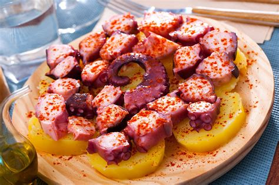
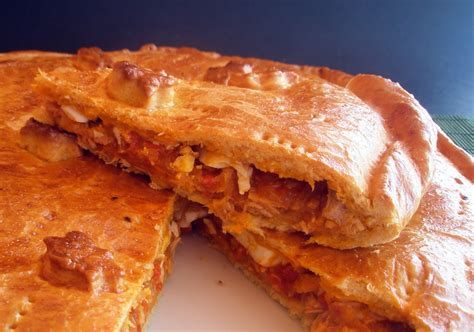
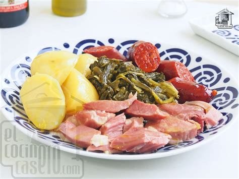
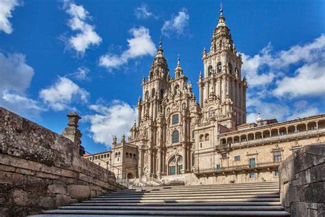
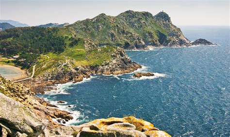
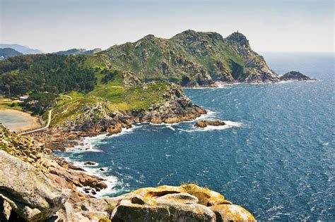
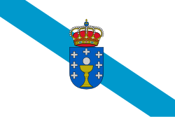

Galicia
Overview
Galicia is located in the northwest of Spain, with a coastline on the Atlantic Ocean. It has a unique culture and its own language, Galician. Galicia is famous for its green landscapes, fresh seafood, and ancient traditions.
Quick Facts
- Capital: Santiago de Compostela
- Regional Language: Galician and Spanish
- Population: ~2.7 million
- Famous for: Camino de Santiago, seafood, green landscapes
- Fun Fact: The Camino de Santiago is a world-famous pilgrimage route!
Popular Dishes
Galician Octopus (Pulpo a la Gallega)

Galician Pie (Empanada Gallega)

Lacón with Turnip Greens (Lacón con Grelos)

Santiago Cake (Tarta de Santiago)

Famous Places
Santiago Cathedral

Costa da Morte

Cíes Islands

Atlantic Islands National Park

Best Time to Visit
The best time to visit Galicia is in spring (April–June) or summer (July–September) when the weather is pleasant and there are many traditional festivals.
Regional Symbols
- Flag: 
- Coat of Arms: